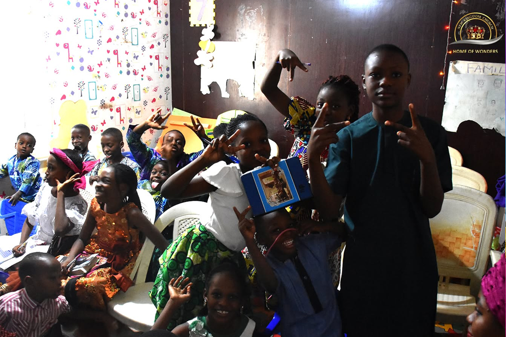
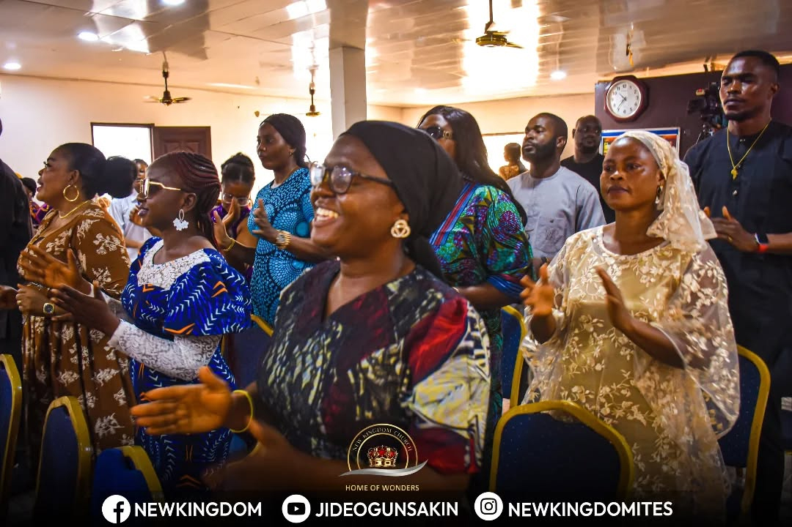
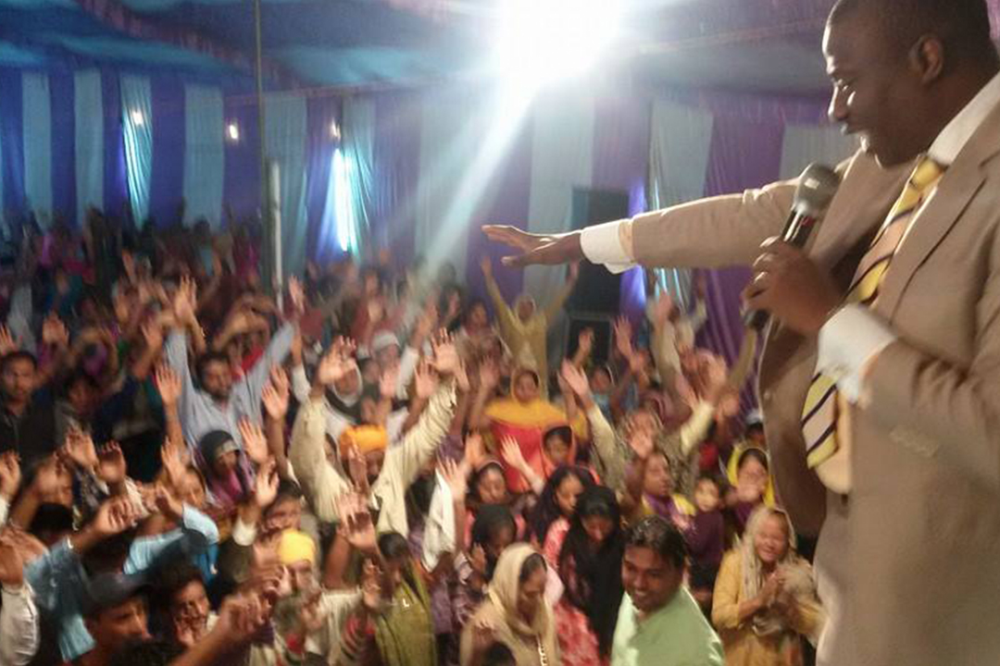

Find A Ministry
Every believer has a place to grow and serve.

Children Ministry
Teaching children biblical values through worship, learning and fun activities.

Youth Ministry
Building a generation of kingdom ambassadors equipped for leadership and impact.
Worship Team
Leading the church into God's presence through praise and worship.

Outreach Ministry
Taking the Gospel beyond the church walls and serving the community.
Why Join A Ministry?
Spiritual Growth
Develop your relationship with Christ through active service.
Community
Build meaningful friendships with fellow believers.
Purpose
Discover and use your God-given gifts.